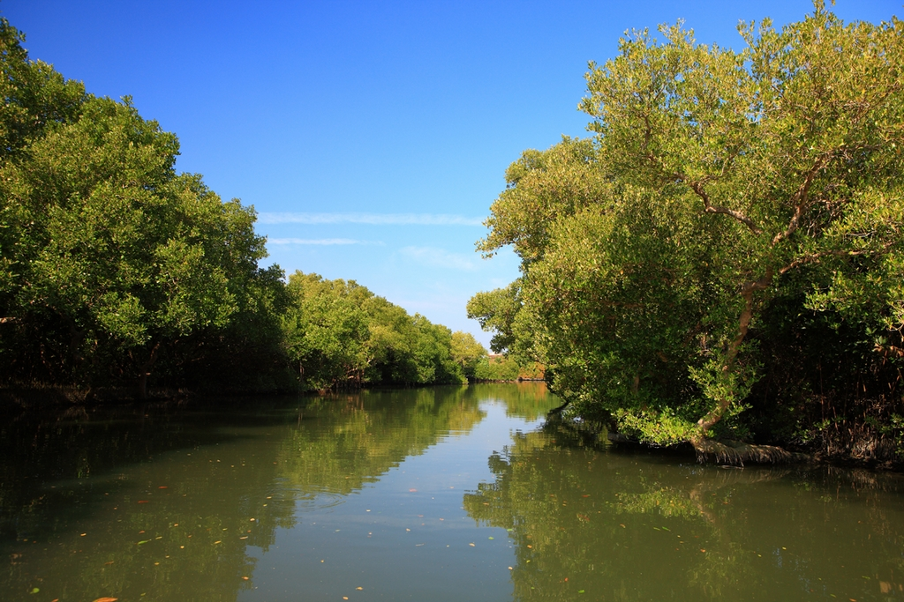

| 目錄 | |
|---|---|
| 國家公園 | 風景圖片 |
| 玉山國家公園 | |
| 陽明山國家公園 | |
| 墾丁國家公園 | |
| 金門國家公園 | |
| 雪霸國家公園 | |
| 太魯閣國家公園 |  |
| 台江國家公園 |  |

玉山國家公園管理處處徽呈現玉山國家公園範圍所轄，有右邊的 漢文化（圖騰）與左邊的原住民文化（圖騰）和諧共融，同時有靠 人類的雙手及智慧共同維護這片好山好水下的動物植物等生物資 源，讓大地生生不息。
本處處徽設計概念係以展現陽明山火山地質地形為主軸， 圖形系統-與現有之其他四座國家公園採相同之基本輪廓， 亦代表整個地球與物質循環、生生不息，永續利用之保育 觀念。此三角形代表陽明山國家公園係以火山地形為主體 資源。三角凹凸形狀，代表區內之最高峰--七星山。圍繞 三角形外之波紋代表陽明山國家公園特殊之噴氣、硫煙及 雨霧。以此抽象之樹型，代表自然界之動植物。標誌採綠 底藍紋即意喻綠地與藍天是人類生存的空間所在。 置頂

本處處徽設計概念係以展現陽明山火山地質地形為主軸， 圖形系統-與現有之其他四座國家公園採相同之基本輪廓， 亦代表整個地球與物質循環、生生不息，永續利用之保育 觀念。此三角形代表陽明山國家公園係以火山地形為主體 資源。三角凹凸形狀，代表區內之最高峰--七星山。圍繞 三角形外之波紋代表陽明山國家公園特殊之噴氣、硫煙及 雨霧。以此抽象之樹型，代表自然界之動植物。標誌採綠 底藍紋即意喻綠地與藍天是人類生存的空間所在。
金門國家公園管理處處徽標誌以傳統閩南式建築的馬背 造型，搭配代表吉祥的紅色構成整體圖案主軸，突顯金門 豐富的人文史蹟與傳統聚落，外圈則以綠色代表金門亦有 豐富的自然資源，例如鳥類等自然資源。
雪霸國家公園管理處處徽標誌呈現園區資源特色： 山岳表示以雪山及大霸尖山為代表的山岳型國家公園； 蜿蜒連綿的綠水取源遠流長的意義；櫻花鉤吻鮭則是突 顯出國家公園生態保育的重責大任；而青山綠水是環保 的理想園地，亦顯現國家公園百年大計的事業！
太魯閣國家公園管理處處徽呈現高山、森林、峽谷一線天， 三棵樹代表「森林」、左右 V 形色塊代表「峽谷」，峽谷 中間有雪覆蓋的山代表「高山」。太魯閣國家公園以雄偉壯 麗、幾近垂直的大理石峽谷景觀聞名。沿途立霧溪的峽谷 風景線而行，觸目所及皆是壁立千仞的峭壁、斷崖、峽谷 、連綿曲折的山洞隧道、大里岩層及溪流等風光。
台江國家公園管理處處徽採以河口、黑面琵鷺加上台灣船、鲲鯓 （沙洲）為設計元素，表現陸域資源特色及台江先民勇渡黑水溝 （台灣海峽）墾拓顯著歷史，象徵台江國家公園的使命與目標。 色彩上以「綠色」表現自然生態生生不息，「藍色」寓意海洋生 態資源豐沛之意象，整體造形既傳達台灣歷史足跡，更表現出台 江國家公園獨有的特色。
首頁